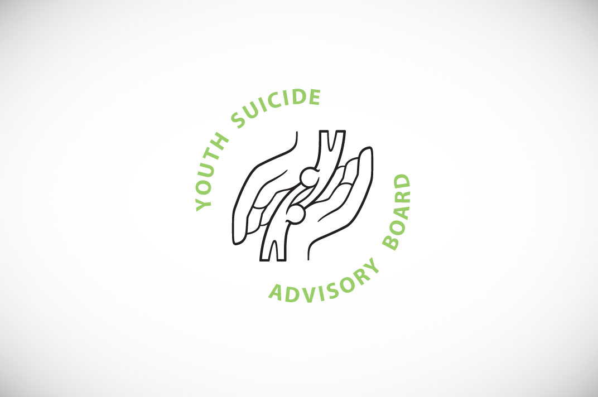
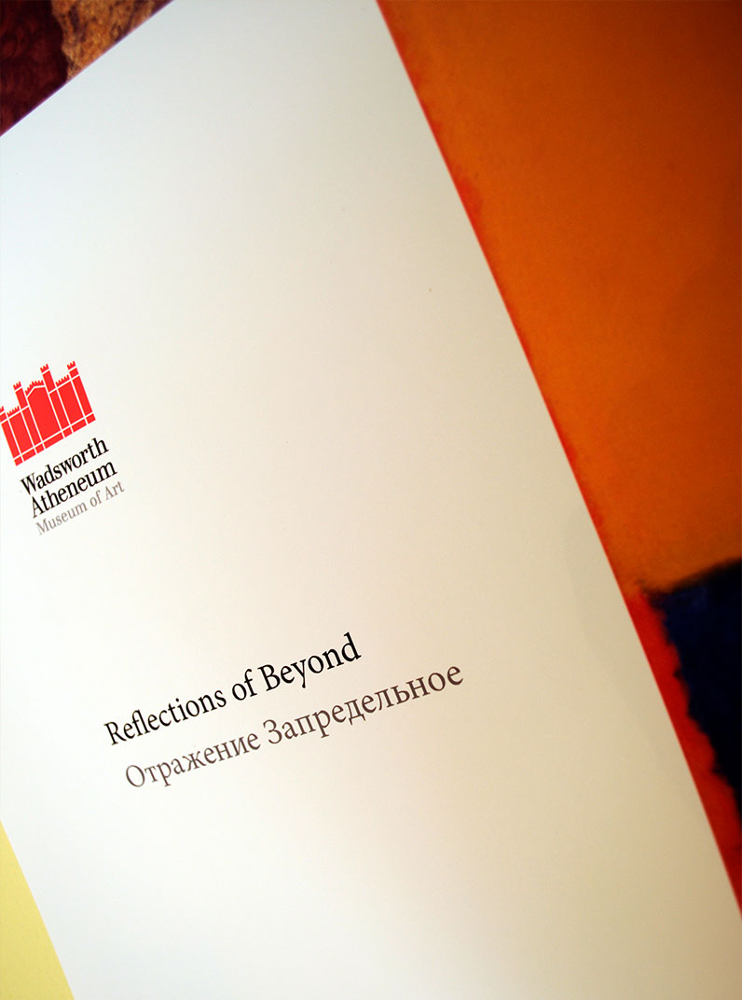
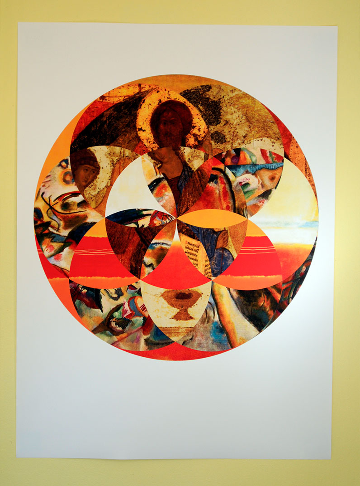
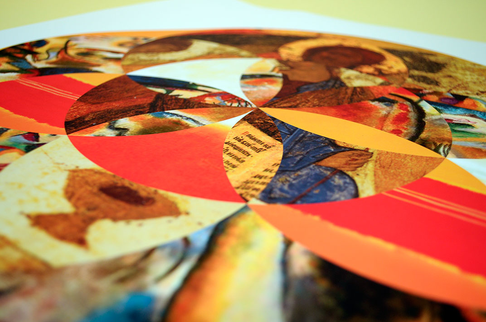

Design
-
Identity

Connecticut State University - American Association of University ProfessorsAn organization that represents the faculties of the Connecticut Universities needed a mark to gain presence at the capitol. Using Connecticut's state bird on a weathervane shows the pivitol role this organization has on behalf of the four campuses.

This is a mark for the commitee dedicated to raising awareness about sexual violence on the CCSU campus. A traumatic expierience may leave one feeling alone and alienated. This symbol shows the diverse circles of support everyone has.

The donkey that carried the god of wine and agriculture/fertility into a city when he was too drunk to walk. This logo presents a cheerful and honest brand of cognac to a similar middle/lower class.

If Crate&Barrel and Whole Foods had a child, it would be Wildthings Inc. A store filled with unusual organic furniture pieces to enliven any urban apartment, the mark offers a quick escape from the busy lifestyle that young professionals in the city lead.
- 
The Youth Suicide Advisory Board needed an identity to communicate help and hope. This delicate subject subject required proper research and a clear message within the logo.
-
Wusah
-
Wildthings
-
Web
-
Invitations
-
YSAB
-
Ramen
-
Posters

In Lissitzky's Constructivist style, the challenge was to accurately use the artist's visual grammar and create an engaging and functional calendar spread. I illustrated the warm summer month in the dynamic typographic and geometric style of constructivism.

The colors were selected to describe the flavors and smells of Oktoberfest. The silouhette of a Daschund subtly communicates that there will be hotdogs.


- 

- 
- 